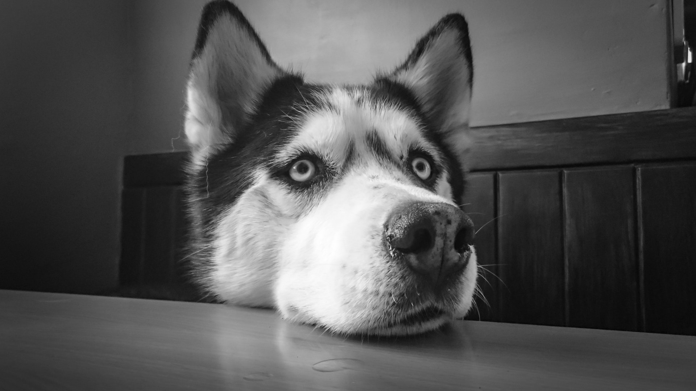

<!DOCTYPE html>
<html lang="en">
<head>
    <meta charset="UTF-8">
    <meta name="viewport" content="width=device-width
        , initial-scale=1.0">
    <meta http-equiv="X-UA-Compatible" content="ie=edge">
    <title>头像制作</title>

    <script src="https://cdnjs.cloudflare.com/ajax/libs/lodash.js/4.17.10/lodash.min.js"></script>
    <script src="./synthesismaker.js"></script>
</head>
<body>
    
    <canvas width="1000" height="1000"></canvas>

    <!--  -->

    <script>
        var sm = new SynthesisMaker()
        sm.loadImg('./pexels-1.jpeg')
          .loadImg('./pexels-2.jpeg')
        //   .addOnloadLisener((e) => {
        //       var index = parseInt(e.target.id.split('i')[1], 10)
        //       console.log(sm.getPixel(sm.datas[index], 0, 0))
        //   }, 'i1')
          .make();
        
    </script>
</body>
</html>